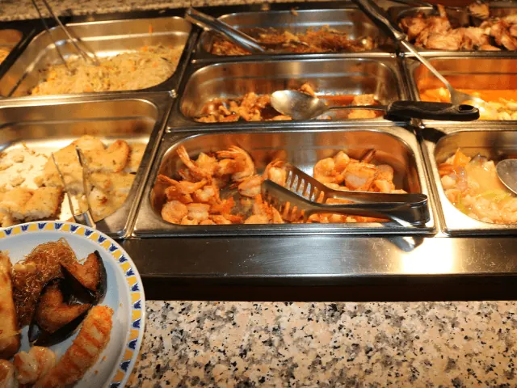
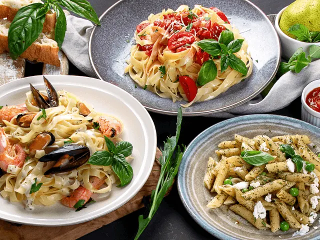
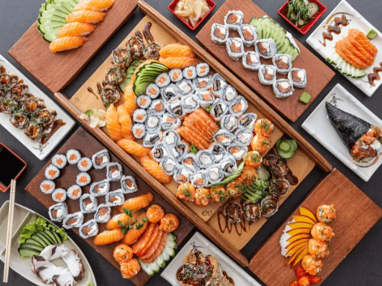
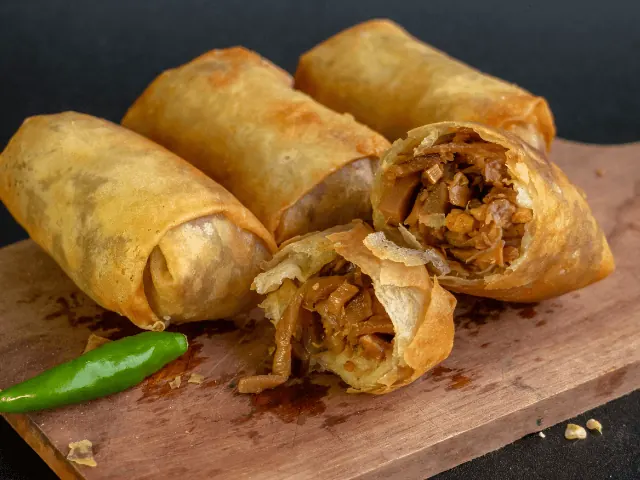

Waarom is een all you can eat restaurant in Nijmegen een goede keuze?
Gepubliceerd op 4 februari 2023, bijgewerkt op 20 oktober 2023
Onderdeel van de gids Restaurants in Nijmegen

De populariteit van het ‘all you can eat’ concept uit de horeca neemt elk jaar verder toe. Het klinkt natuurlijk ook wel heel erg aantrekkelijk. Je weet bij binnenkomst al direct hoeveel het eten je gaat kosten en je kunt zoveel eten als je zelf wilt. In de meeste gevallen kun je ook genieten van meerdere wereldkeukens, waardoor je gehele gezelschap tevreden is. Bij het all you can eat concept komt het namelijk vrijwel niet voor dat er niets aanwezig is dat je niet lust. Doordat het eten bij vrijwel iedereen in de smaak valt, is het erg populair onder grote groepen. Geen discussies meer welke keuken het gaat worden, maar gewoon genieten van zoveel mogelijk keukens op één plaats, ideaal toch?
Overzicht All You Can Eat restaurants in NIjmegen
Waarom zijn all you can eat restaurants zo populair?
De populariteit van het ‘all you can eat’ concept is goed te verklaren. Het heeft allerlei voordelen waar je simpelweg niet omheen kunt. Zo biedt het een uitstekende prijs-kwaliteitverhouding omdat je onbeperkt mag eten zonder dat extra kosten bij komen kijken. Dit maakt het een geweldige optie voor gezinnen en personen die op hun budget moeten letten.Ten tweede bieden all-you-can-eat restaurants een ruime keuze aan gerechten. Denk niet alleen aan echte klassiekers, maar ook innovatieve opties, waardoor je van alles uit kunt proberen en mogelijk nieuwe favorieten ontdekt.
Sfeervol en ontspannen uit eten
Naast de grote waarde en variëteit biedt all-you-can-eat dineren ook een ontspannen en eetervaring. Neem vooral de tijd om van de sfeer en de gezelligheid te genieten zonder je opgejaagd te voelen om maaltijd snel op te eten. Dit maakt het een geweldige optie voor groepsuitjes, zoals verjaardagen, jubilea en werkfeesten. Tenslotte zijn all-you-can-eat een geweldige ervaring voor mensen van alle leeftijden, omdat jong en oud het leuk vindt om onbeperkt te eten en nieuwe gerechten uit te proberen. Kortom: all you can eat restaurants in Nijmegen zijn perfect voor iedereen die op zoek is naar ontspanning en afwisseling!

Tips voor het beste all you can eat restaurant in Nijmegen
Wanneer je wilt gaan genieten in een all you can eat restaurant, dan wil je natuurlijk dat de kwaliteit van het eten ook goed is. Wanneer je alleen frietjes en kipnuggets in de schalen ziet liggen, dan is de pret er snel vanaf. De kwaliteit en de diversiteit van de gerechten is dus heel erg belangrijk. Wanneer je op zoek bent in Nijmegen naar een all you can eat restaurant met een kwalitatieve keuken, dan geven we je graag een aantal tips. Ben je al nieuwsgierig? Lees dan snel verder!
1 – Wereldkeuken Triavium
In de Nijmeegse wereldkeuken Triavium kun je genieten van het all-in dining concept. Voor een vast bedrag per persoon kun je onbeperkt genieten van allerlei verschillende wereldse gerechten. Het bedrag dat je afrekent bij wereldkeuken Triavium is inclusief Bavaria tapbier, de huiswijnen, diverse frisdranken, koffie, thee en alcoholvrije bieren met uitgang van radler bier. Bij binnenkomst in het restaurant kies je ervoor of je twee of drie uur gebruik wilt maken van het arrangement. Twee uur is vanzelfsprekend goedkoper dan het drie uur durende arrangement. Na het afrekenen word je naar je tafel gebracht, waarna het genieten kan beginnen.
Speciale drankjes
Naast het feit dat je in dit restaurant geniet van Bavaria tapbieren en huiswijnen, zijn er ook andere alcoholische drankjes verkrijgbaar. Denk hierbij aan aan sterke dranken, maar ook aan radler biertjes. Deze drankjes zitten niet inbegrepen in de prijs. Je kunt in dit geval wel bij de receptie speciale consumptiemunten kopen. Met je consumptiemunten kun je dan alsnog genieten van sterke drankjes, speciaalbieren en radlers.
Geniet van de wereldkeuken
In de wereldkeuken van Triavium geniet je volop keukens uit verschillende werelddelen. De Japanse keuken in het restaurant biedt de gasten een lekkere diversiteit aan van verse sushi tot aan vlees en vis van de Teppanyaki plaat. De Spaanse keuken van het restaurant zorgt ervoor dat de smaakpapillen van de gasten goed geprikkeld worden. Je geniet in de Spaanse keuken namelijk van allerlei frisse tapas. De Chinese keuken van het restaurant bestaat uit de altijd populaire wokgerechten en uit diverse Chinees-Indische gerechten. De Amerikaanse keuken van het restaurant biedt de gasten de lekkerste en malste stukjes vlees aan die voor jou daar en op dat moment op de gril worden bereid.
Italiaanse lekkernijen
Alsof dat nog niet genoeg is, vind je in deze wereldkeuken ook allerlei Italiaanse lekkernijen. De Italiaanse keuken biedt een lekkere diversiteit aan lasagne, pizza, pasta en carpaccio. Alle keukens worden aangevuld met allerlei soorten afwisselende gerechten. Denk hierbij aan patat, spareribs, pangasiusfilet, kipkluifjes, gerookte zalm, vele soorten groente, aardappels en nog veel meer!

2 – Tomi Sushi & Grill
Bij een bezoek aan Tomi Sushi & Grill wandel je direct een trendy sushi walhalla binnen. Het restaurant ligt gevestigd in het centrum van Nijmegen en is een echte aanrader als je in Nijmegen bent. Tijdens een bezoekje aan het restaurant ervaar je direct het gevoel van de ‘Japanase dining Experience’. Hoe bijzonder!
All you can eat
Het restaurant Tomi Sushi & Grill maakt gebruik van het all you can eat concept. Voor een vast bedrag per persoon kun je twee uur lang zoveel eten en proeven als je zelf wilt. Je kunt tijdens je restaurantbezoek genieten van heerlijke Japanse sushi en Japanse grillgerechten. De prijzen bij Tomi Sushi & Grill zijn exclusief drankjes.
Kwaliteit gegarandeerd
Tom Sushi & Grill staat in de regio bekend om zijn kwalitatieve en smaakvolle keuken. Het restaurant heeft inmiddels zijn naam sterk opgebouwd, waardoor je nooit terecht komt in een leeg restaurant. Tijdens een bezoek aan het restaurant kun je hierdoor vrijwel altijd genieten van een gezellige drukte.

3 – Orient Plaza Nijmegen
Een andere echte aanrader voor all you can eat dining is restaurant Orient Plaza in Nijmegen. Bij Orient Plaza Nijmegen kun je samen met je gezelschap genieten van de echte authentieke Oosterse gerechten. De gerechten worden aan je tafel gebracht waar je één en al Oriëntaalse ambiance inademt. Je hoeft tegenwoordig niet meer te reizen naar het verre Oosten om te kunnen genieten van de authentieke keuken van het Oosten, bij Orient Plaza kun je er namelijk in Nijmegen van genieten.
Eeuwenoude Oosterse tradities staan centraal
Orient Plaza is inmiddels een echt begrip in Nijmegen en omgeving. Het restaurant bestaat inmiddels al ruim dertig jaar en wordt bezocht door gasten vanuit de gehele regio. Wanneer je een bezoek brengt aan restaurant Orient Plaza, dan kun je vier verschillende Oriëntaalse restaurants proeven, welke allemaal huizen in één restaurant. Alle vier de restaurants zijn verbonden aan de eeuwenoude Oosterse traditie en bieden een grote diversiteit aan in traditionele, smaakvolle en nostalgische gerechten.
Waar komen de gerechten uit dit restaurant vandaan?
Gerechten in het restaurant komen uit de landen Indonesië, Thailand, China en Japan. De gerechten worden door de koks met veel passie en liefde bereid voor de gasten van het restaurant. De gerechten worden bereid met enkel verse ingrediënten en de originele Oosterse kruiden en specerijen. Dit is ook direct één van de geheimen waardoor je bij Orient Plaza kunt genieten van de authentieke smaken in de gerechten.
Specialiteiten en kennis samengevoegd
Bij Orient Plaza geniet je van vier verschillende restaurants, samengevoegd in één restaurant. Deze vier Aziatische restaurants voegen hun specialiteiten en kennis samen, zodat de gast kan genieten van de allerlekkerste gerechten. Tijdens een bezoek aan Orient Plaza kun je genieten van verschillende soorten Oriëntale keukens.
Van sushi en grill tot Chinees
Restaurant Orient Plaza is natuurlijk het hoofdrestaurant van het algehele restaurant. Als gast kun je daarnaast ook genieten van de Chinese/ Kantonese keuken van restaurant Honyun. In dit restaurant kun je genieten van de lekkerste gerechten uit verschillende Chinese regio’s. Dan hebben we ook nog Sushi & Grill restaurant Jiro. Dit restaurant beschikt over de lekkerste grillspecialiteiten, verse sushi en verschillende verrassende bijgerechten.
Proef van de authentieke Japanse keuken
Ben je benieuwd naar de culinaire gerechten uit de echte authentieke Japanse keuken? Dan is restaurant Kyoto echt iets voor jou. In dit restaurant bereidt de chefkok de gerechten direct klaar bij jou aan tafel. Je gaat in dit geval zitten aan een tafel met een grote tepanyaki bakplaat. De kok geeft een show weg tijdens het eten en het eten beland direct van de plaat op jouw bord, verser kun je het niet krijgen! Als laatste restaurant kun je ook nog genieten van de Koreaanse BBQ. Deze BBQ bevindt zich aan je eigen tafel, waardoor je kunt genieten van de lekkerste gerechten uit de Koreaanse keuken. Voldoende keuze dus bij Orient Plaza in Nijmegen

4 – La Cubanita Nijmegen
Een ander zeer leuk en lekker all you can eat restaurant in Nijmegen is restaurant La Cubanita. Dit restaurant komt je qua naam misschien bekend voor, het restaurant heeft namelijk tientallen vestigingen door heel Nederland. De restaurants van La Cubanita staan bekend om zijn overheerlijke Spaanse tapas. De Tapas van La Cubanita kun je onbeperkt komen eten in een speciaal samengesteld arrangement.
Tapasgerechten om van te watertanden
Wanneer je kiest voor La Cubanita, dan verschijnen er allerlei overheerlijke tapasgerechten op tafel. Een aantal voorbeelden waar je ongetwijfeld van gaat watertanden: Flinterdunne fricandeau met tonijnmayonaise, rucola en kappertjes, Frisse salade met gemarineerde tomaatjes, Parmezaanse kaas en citroendressing, Varkenshaas in saliesaus gegarneerd met krokante serranoham, Krokante wrap met hotdog, jalapeño-roomkaas en zoet-zure rode ui of Gefrituurde garnalen op een bedje van frisse avocadodip.
Heerlijke nagerechten
Wil je liever smullen van een aantal lekkere nagerechten? Ook dan La Cubanita de ‘place to be’. Een aantal voorbeelden van de heerlijke nagerechten zijn Crème-brûlée-donut met rood-fruitcoulis en slagroom, warme wafel met banaansorbet en chocoladesaus, Vanille-ijs met espresso, slagroom en karamel of een Chocolade lavataartje met vanille-ijs en slagroom. Het maakt dus niet uit wat je lekker vindt, La Cubanita heeft voor elk wat wils. Hoe heerlijk! Doordat je onbeperkt kunt genieten, kun je alles kiezen wat jou lekker lijkt.
All inclusive eten in Nijmegen: op deze locaties moet je zijn
Wanneer je wilt genieten van het all inclusive concept in Nijmegen, dan zijn er dus vrij veel mogelijkheden. Waar je normaal gesproken voornamelijk buffetten en all inclusive dining concepten terugvindt bij de Chinese restaurants, heeft Nijmegen een flinke diversiteit in de keukens. Bovenstaande restaurants zijn namelijk enkel een selectie van de populairste en lekkerste all inclusive restaurants van Nijmegen. De stad beschikt over nog veel meer all inclusieve dining conncept restaurants, waardoor je altijd geniet van een heerlijk avondje uit!